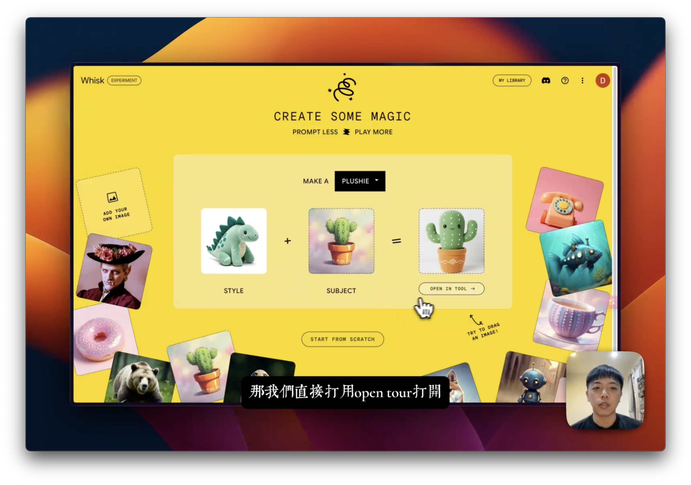
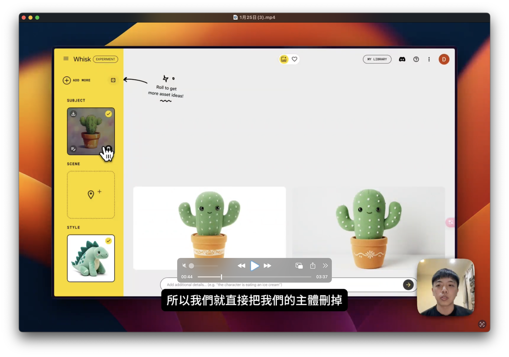
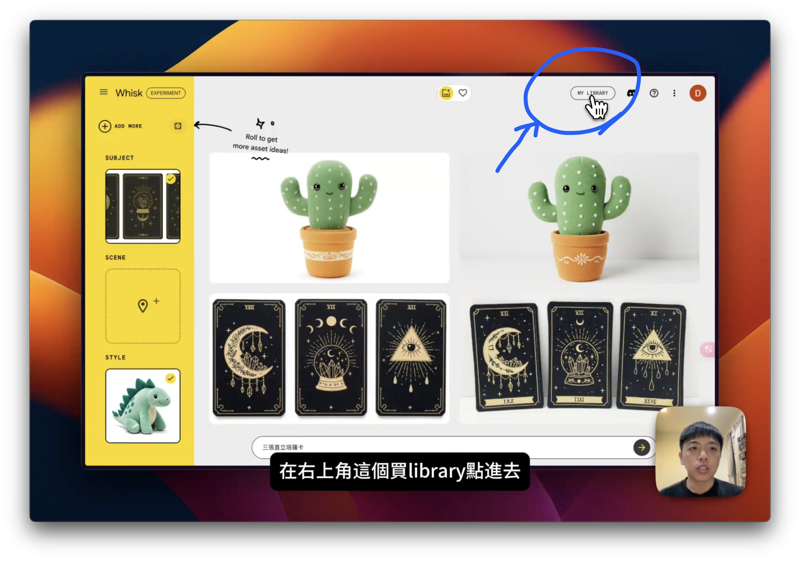
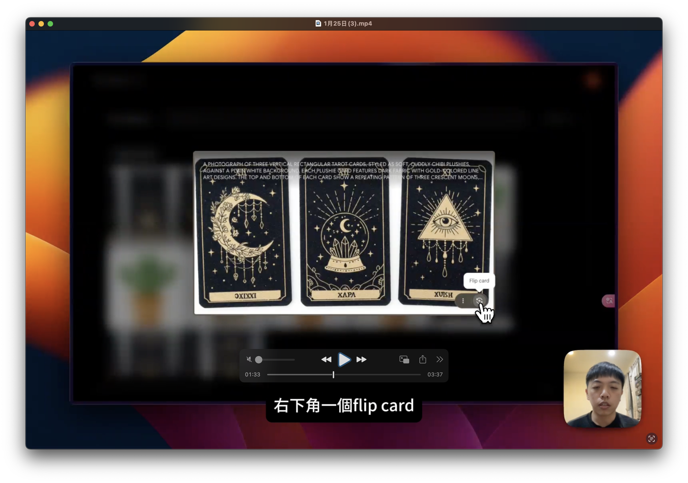
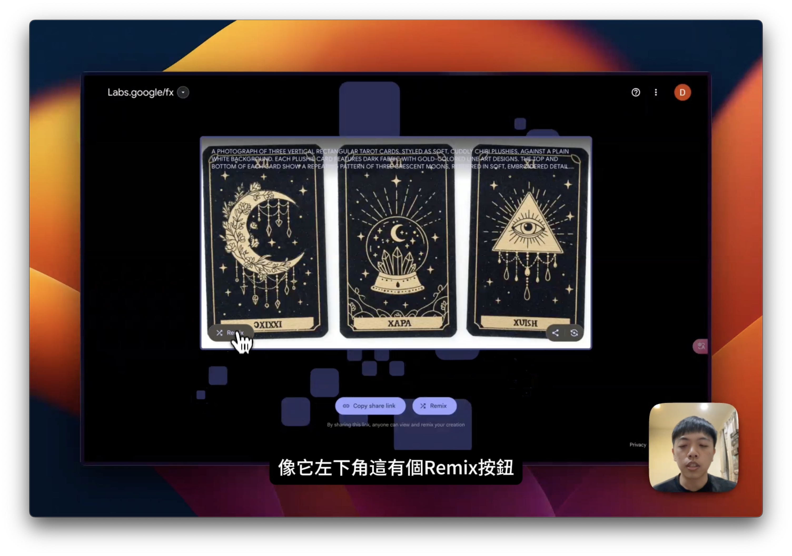
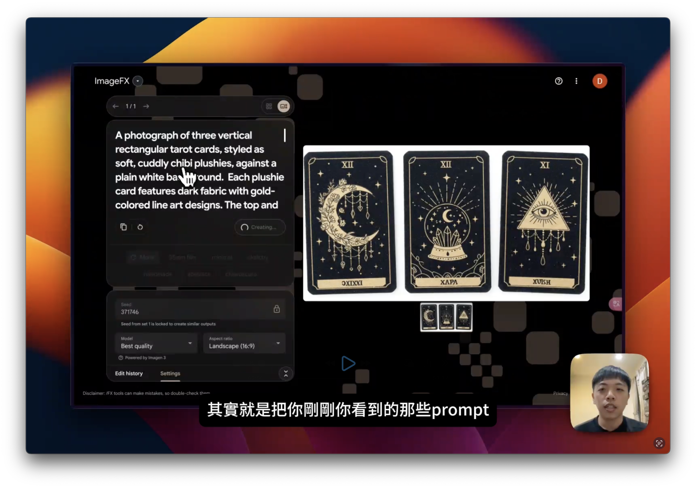
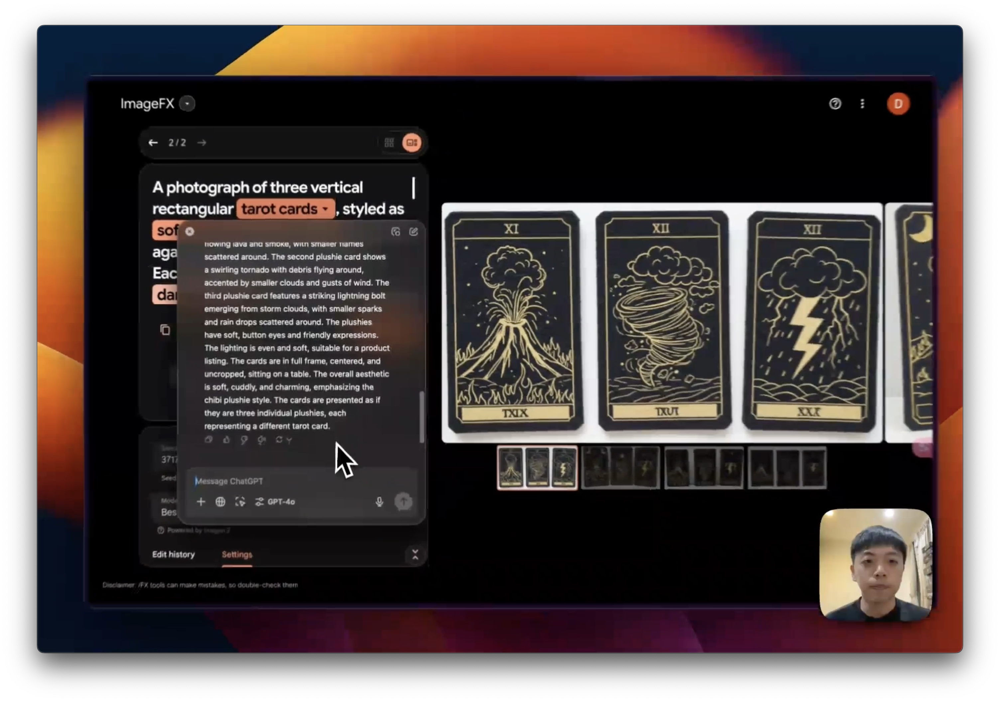

這裡是文字記錄，影片版可以在這裡觀看（三分鐘而已很快）： https://youtu.be/1v91njbrc000
什麼是 Whisk？
Whisk 是 Google 推出的一個圖片生成工具，它的特點在於可以根據用戶提供的描述（prompt），生成擁有特定材質或風格的圖片，並且完全免費使用。這項服務操作簡單，即使是非專業人士也能輕鬆上手。
⚠️ 注意：Whisk 目前只有對美國用戶開放。現在如果要使用必須透過 VPN 服務
第一步：在官網上試玩
- 進入 Whisk 官網：打開 Whisk 網站，你可以直接從首頁進行圖片生成。
- 上傳圖片：將你的素材（例如仙人掌圖片）拖入 Whisk 的操作界面。
- 選擇材質：Whisk 將根據你的描述，自動將圖片轉換為指定的質感，例如將仙人掌變成絨毛玩偶的質地。
在這一步中，你可以立即看到結果。例如，將一張普通圖片(subject)加上風格(style)後，可以輕鬆調整細節，變成玩偶風格的仙人掌。

第二步：調整生成圖片
- 進入生成畫面：用 Open in tool 或者右上角的 Experiment 按鈕開啟生成畫面。
- 刪除不必要的元素：若要創建自己的 style 或 subject，可將多餘的圖片內容刪除。
- 輸入描述（prompt）：在輸入欄中輸入你的需求，無論是中文還是英文，Whisk 都能正確解析。例如，可以輸入「生成刺繡風格的塔羅牌」。
- 進一步微調：你可以選擇重新生成或編輯 prompt 內容，以確保得到滿意的效果。

進階操作：結合 Library 與 Remix 功能
-
進入 Library：點擊右上角的 Library 按鈕，查看 Whisk 為你生成的所有圖片。

-
進入圖片信息：點擊圖片後，右下角 flip card 後卡片詳細資訊會顯示 prompt 和 seed（隨機生成參數），方便進一步調整。

-
使用 Remix 功能：進入後，選擇分享將連結複製後，貼到新的視窗，他會打開下面的畫面，再點擊 Remix。

-
Google Image Fx：在 Remix 點擊後，會進入 Google Image Fx。在這裡你可以修改 prompt，調整材質的軟硬度（如 soft、hard、rough）來嘗試不同風格。

你也可以透過我的 google image FX 分享連結當作起點開始嘗試哦。
提升效果：利用 ChatGPT 編輯 Prompt
若需要更精確的生成效果，可以將 Whisk 的 prompt 貼入 ChatGPT，並要求 AI 進行優化。例如：
- 需求描述：將塔羅牌改為火山爆發、龍捲風和閃電的圖案。
- 修改提示：要求 ChatGPT 保留原有材質，僅調整主題內容。
將 ChatGPT 優化的 prompt 貼回 Whisk，點擊生成，即可得到一組全新的圖片。

反覆調整與創作的可能性
Whisk 每次會生成多張圖片，供用戶挑選。如果生成結果仍未達到理想效果，將修改後的 prompt 再次貼入 ChatGPT，提出更具體的要求（例如更多顏色或特殊光效），即可不斷改進圖片質感。
總結
使用 Google Whisk，從創建初稿到微調細節，整個過程都簡單高效，讓任何人都能輕鬆上手並創造專業水準的作品。不論是設計刺繡風格卡片還是生成塔羅牌，Whisk 都是不可或缺的創意工具。
希望這篇指南能幫助你更好地利用 Whisk，開始創造屬於你的驚艷作品！
如果這篇文章對你有幫助，請分享給你的朋友吧！對 AI 創作或軟體開發有興趣的話，可以追蹤我的 Threads 每週會固定發表新的創作心得！